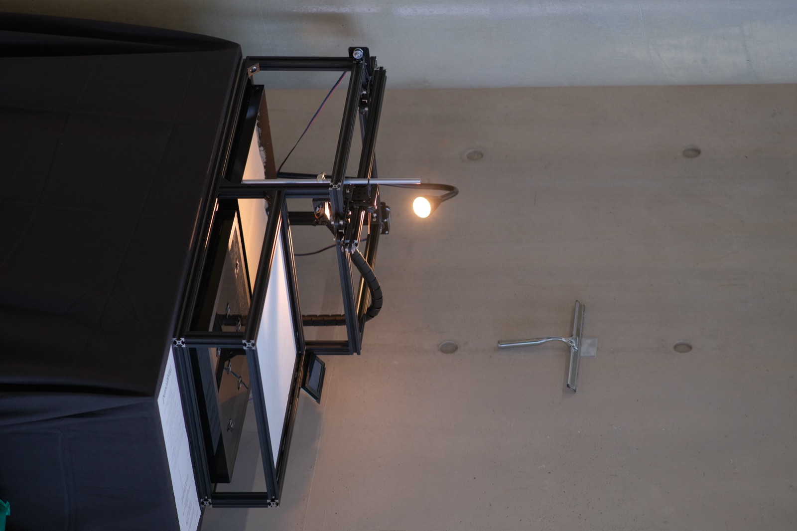
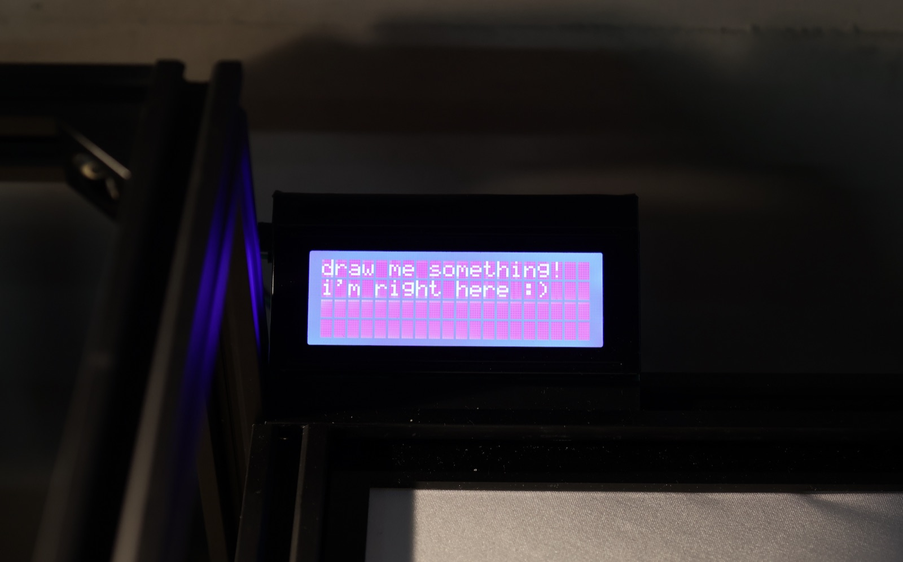
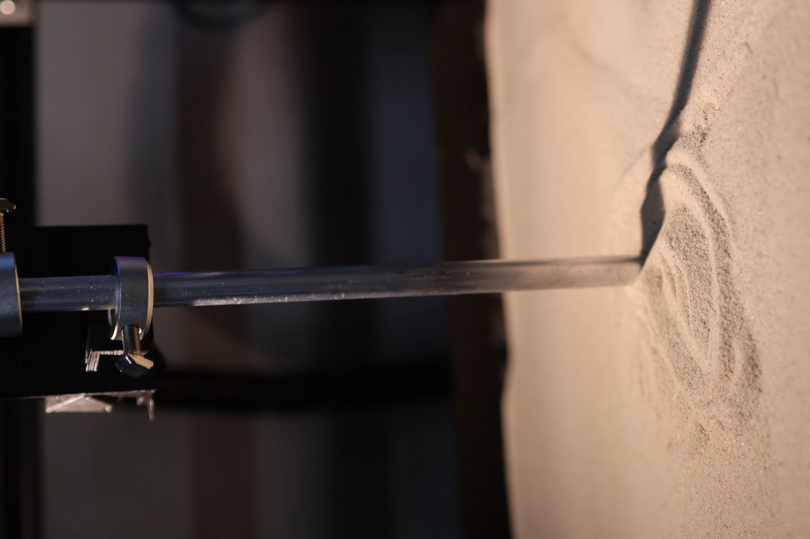

Interactive Installation · 2026
Playground ( PLAYGROUND )

Touch × Sand: A Physical Interface
Playground explores the boundary between physical material and digital feedback. Beneath a sheet of elastic fabric, an array of ToF sensors tracks a visitor's drawing in units of pressure and speed. The machine recreates in sand the gestures it feels through its own skin, and — continuing from the drawing style it has learned — adds its own lines behind yours.


From Material to Interaction
Human skin receives stimuli not through a continuous surface but through touch receptors scattered at intervals, and the brain stitches those discontinuous signals into a single sensation. The way this machine perceives a drawing mirrors that same human sense of touch.
As it redraws the gesture in sand, the machine reads whether it was soft or rough, quick or slow, and passes that impression to the screen. It isn't trying to guess what you drew, but to sense how you felt while drawing it. All of this unfolds gently, without hurry.
What the Hands Know
And in the end, the marks in the sand are erased — following the unspoken rule of every playground.